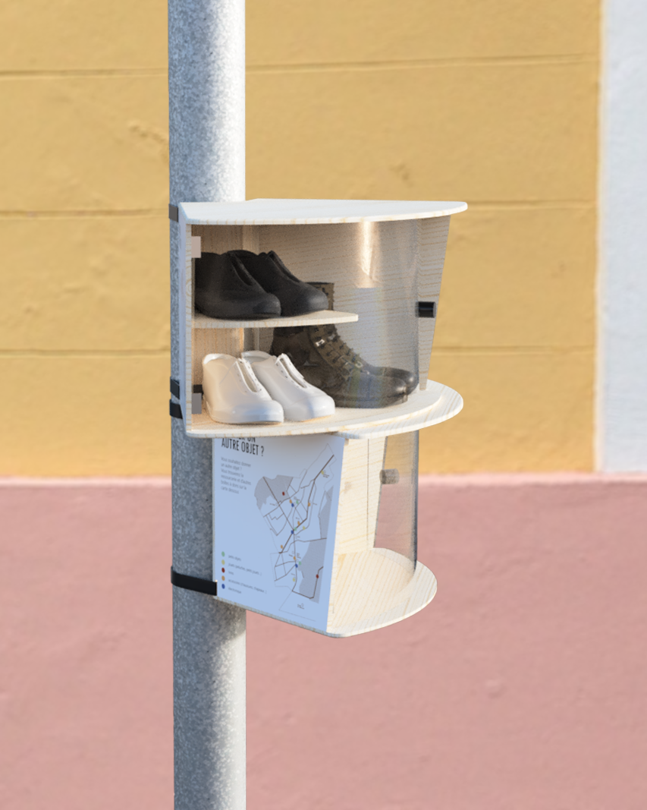
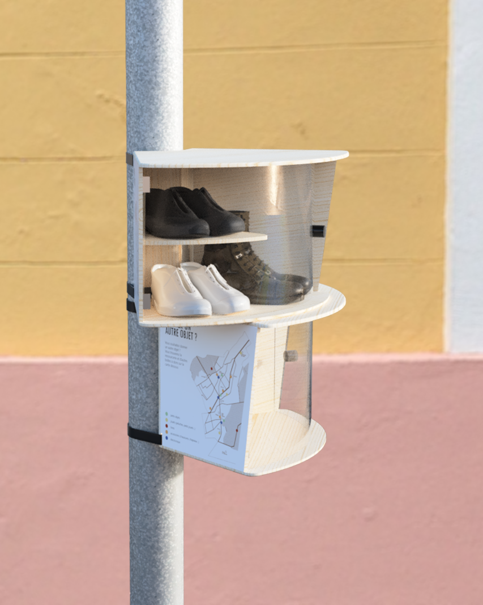
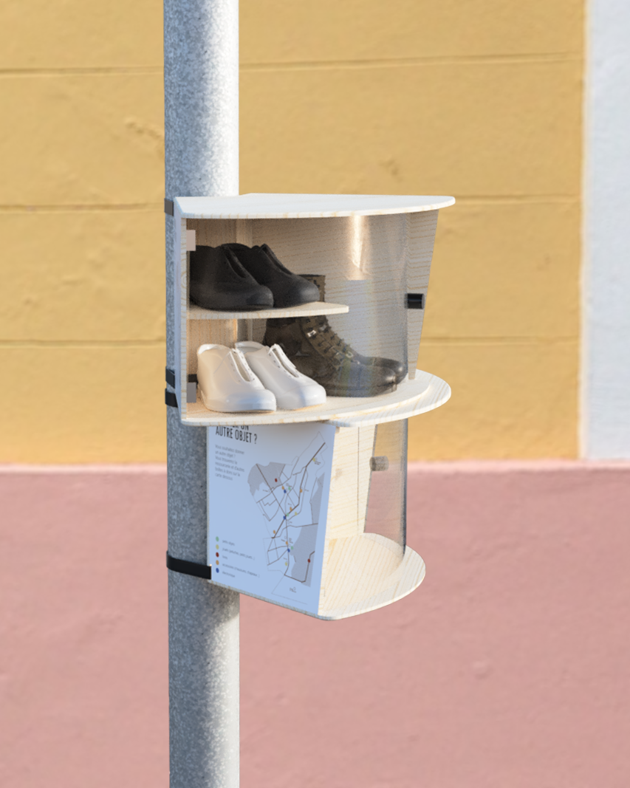
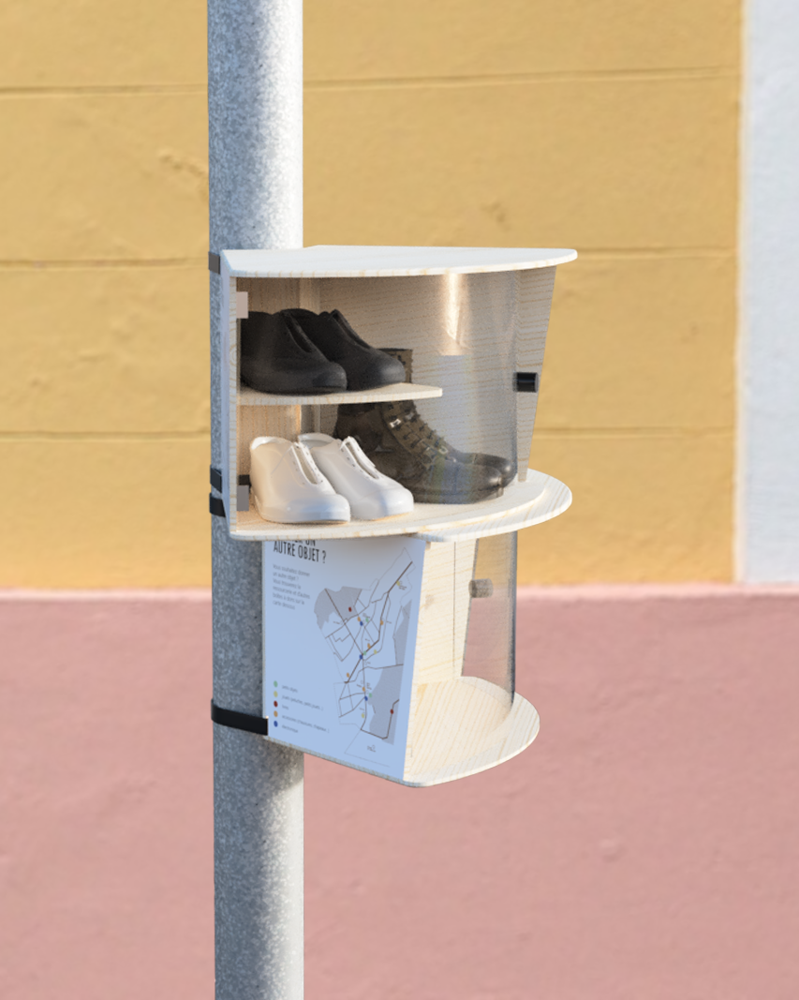

A givebox that suits its environment, made for a association. made out of reclaimed wood and plexiglas. DISCIPLINES: Product design, Service design, Urban design DURATION: 3 weeks CLIENT: Vivons Chaville Ensemble YEAR: 2021
Why don’t people give stuff away?
They aren’t trigerred to think about their unused objects.

Colors are attributed for each category of object in order to make the boxes differenciable from far away.

Making smaller boxes allow the giveboxes to be situated where it makes sense for them to be. They are spread out in the city for a better visibility.

The inside of each box changes to better optimize the space inside.

A pen and post-its are in each box to allow citizens to describe their object and the story they had with it.

They are built with reclaimed wood to lower the costs of the construction of the boxes by the association, and were thought to be easily built.
All projects are under license.